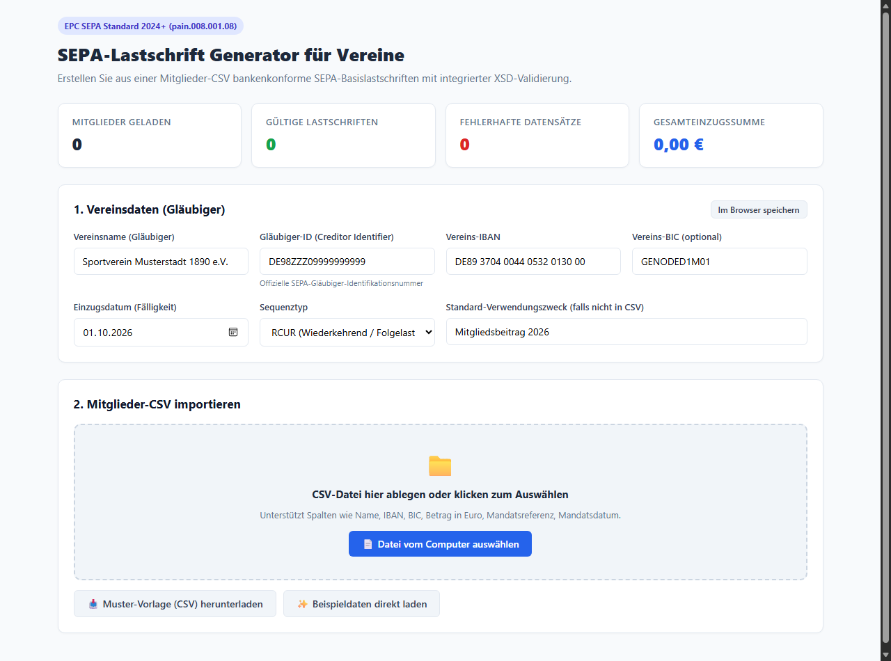
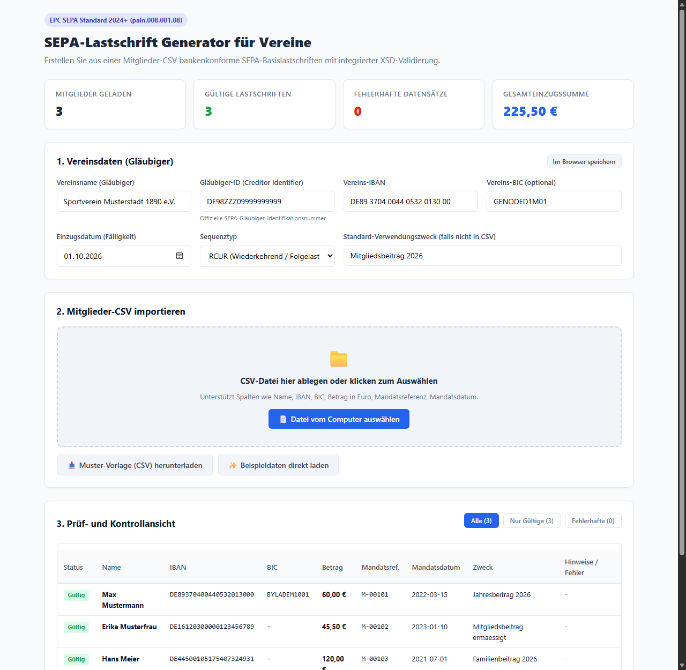
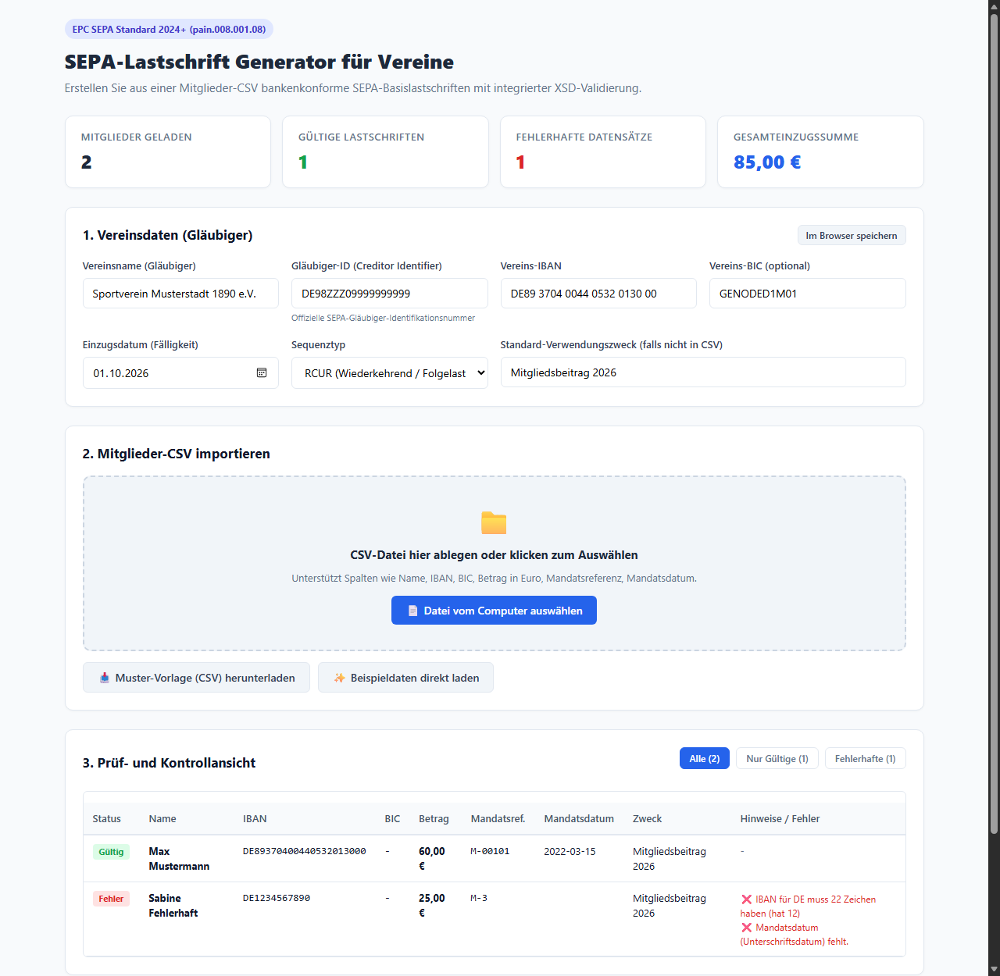
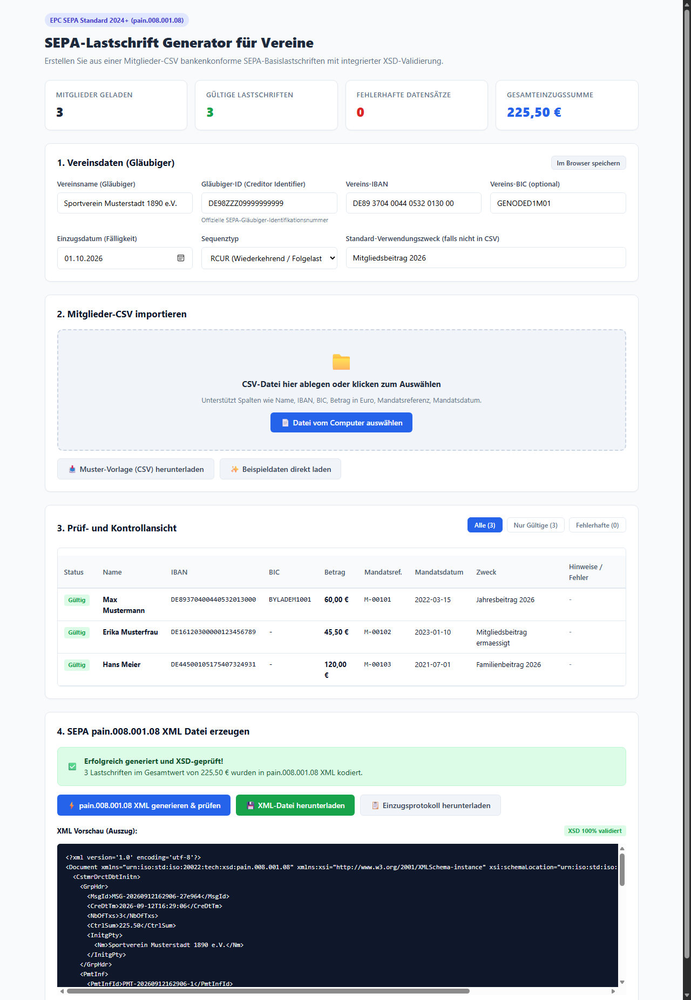

Schnellstart: Wie starte ich das Programm?
Option 1: Als eigenständige Windows-App
Kein Python erforderlich. Startet direkt per Doppelklick.
Doppelklick auf dist/csv2sepaXml.exe
Option 2: Per Windows-Batchdatei
Öffnet automatisch den Browser auf Port 8080.
Doppelklick auf start_web.bat
Option 3: Terminal / CLI-Befehl
Für Entwickler oder automatisierte Skripte.
python sepa_generator.py --web
1. Vereins- und Gläubigerdaten einstellen
Tragen Sie den Vereinsnamen, die offizielle Gläubiger-ID (z.B. DE10... oder DE98ZZZ...), die Vereins-IBAN und das gewünschte Fälligkeitsdatum ein. Mit dem Button „Im Browser speichern“ oder über eine lokale config.json merkt sich das System diese Einstellungen dauerhaft für den nächsten Einzug.

RCUR (Wiederkehrend / Folgelastschrift). Bei Neumitgliedern oder erstmaligem Einzug nach neuem Mandat kann auch FRST gewählt werden.
2. Mitglieder-CSV importieren
Der integrierte CSV-Parser erkennt Spaltenüberschriften flexibel. Typische Varianten wie Beitrag in Euro, Betrag, Mitgliedsbeitrag sowie IBANs mit oder ohne Leerzeichen werden automatisch normalisiert und verarbeitet.

3. Prüf- und Kontrollansicht (Vorab-Check)
Sollte eine IBAN einen Tippfehler haben (Prüfziffern-Algorithmus MOD97-10) oder ein Mandatsdatum fehlen, wird die Zeile rot hervorgehoben und der genaue Fehlergrund angezeigt. Über die Filter-Reiter können Sie gezielt zwischen „Alle“, „Nur Gültige“ und „Fehlerhafte“ wechseln.

DE69 5001 0517...) werden automatisch entfernt. Nur echte syntaktische oder rechnerische Fehler verhindern den Einzug der jeweiligen Einzelposition.
4. SEPA pain.008.001.08 XML & Protokoll generieren
Klicken Sie auf „⚡ pain.008.001.08 XML generieren & prüfen“. Das Programm validiert den erzeugten XML-Code unmittelbar gegen das offizielle ISO 20022 XSD-Schema der Bundesbank / des EPC. Bei erfolgreicher Validierung leuchtet das grüne Banner auf.

1.
sepa_lastschrift_pain008_[DATUM].xml – Laden Sie diese Datei direkt im Online-Banking Ihrer Bank hoch (z.B. Sparkasse, Volksbank, Deutsche Bank, Commerzbank).2.
sepa_einzugsprotokoll_[DATUM].txt – Revisionssicheres Textprotokoll für Ihre Kassenprüfer und Vereinsunterlagen mit Kontrollsummen und Hashwert.
CSV-Spaltenreferenz
Die Spaltenüberschriften können mit Semikolon (;) oder Komma (,) getrennt sein. Groß-/Kleinschreibung spielt keine Rolle.
| Spalte | Pflichtfeld? | Erkannte Bezeichnungen | Beispiel / Format |
|---|---|---|---|
| Name | Pflicht | Name, Mitglied, Kontoinhaber, Fullname |
Mustermann, Max |
| IBAN | Pflicht | IBAN, Kontonummer, IBAN-Nummer |
DE89 3704 0044 0532 0130 00 |
| Betrag | Pflicht | Beitrag in Euro, Betrag, Beitrag, Summe |
25,00 oder 25.00 € |
| Mandatsreferenz | Pflicht | Mandatsreferenz, Mandatsnummer, Mitgliedsnummer |
M-2026-0042 |
| Mandatsdatum | Pflicht | Mandatsdatum, Unterschriftsdatum, Datum |
21.10.2022 oder 2022-10-21 |
| BIC | Optional (für DE) | BIC, SWIFT, BIC-Code |
BYLADEM1001 (bei dt. Konten nicht nötig) |
| Verwendungszweck | Optional | Verwendungszweck, Zweck, Buchungstext |
Mitgliedsbeitrag 2026 |
Häufige Fragen (FAQ)
DE69 5001 0517 5418... wird automatisch zu DE69500105175418...).
vereinseinzug.log speichert lediglich technische Statusmeldungen ohne persönliche Namen oder Kontonummern.